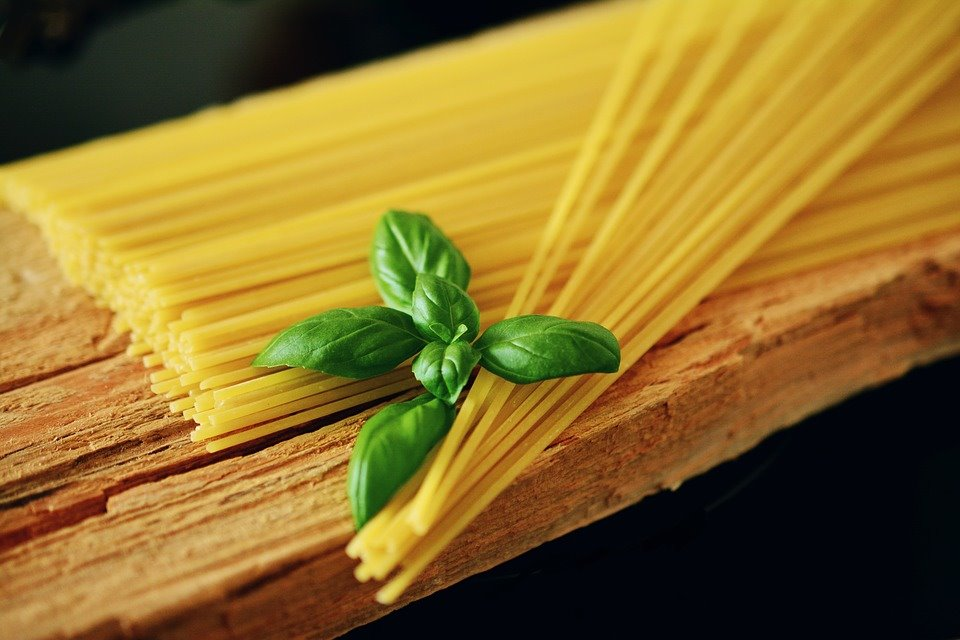
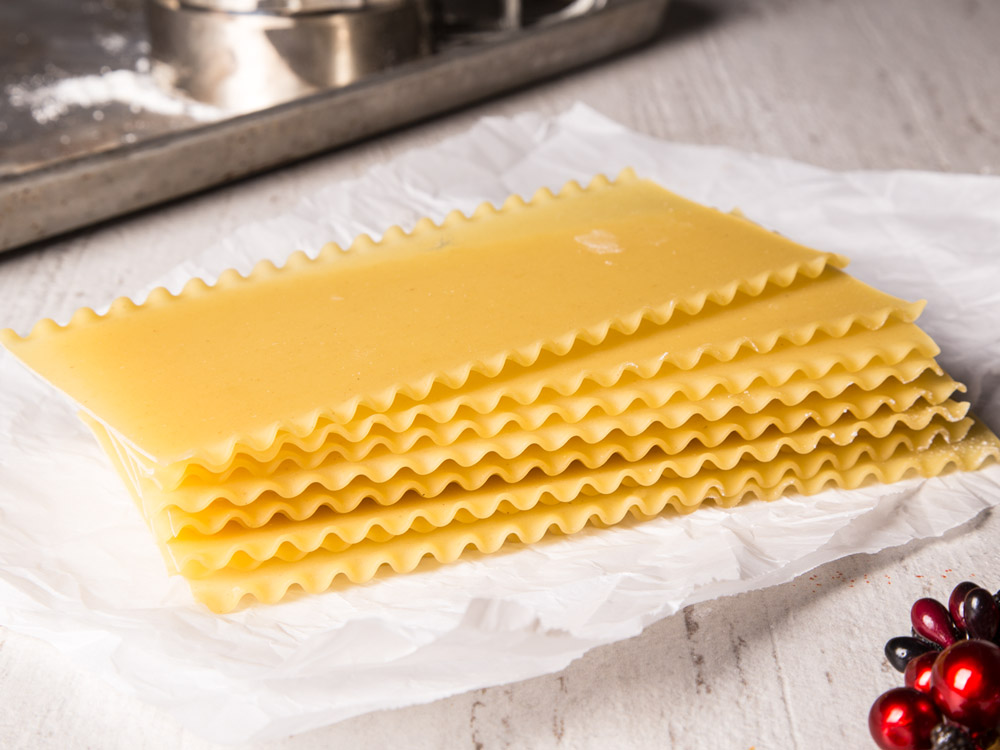
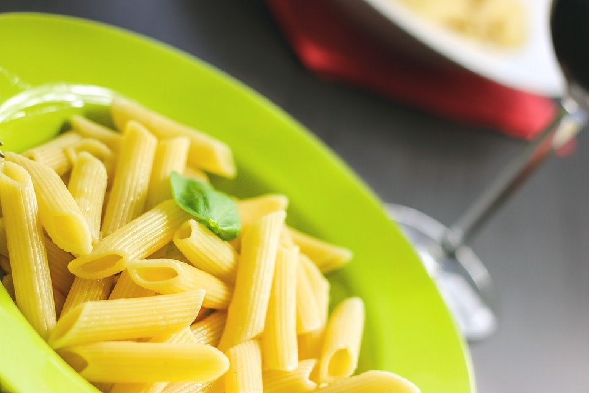
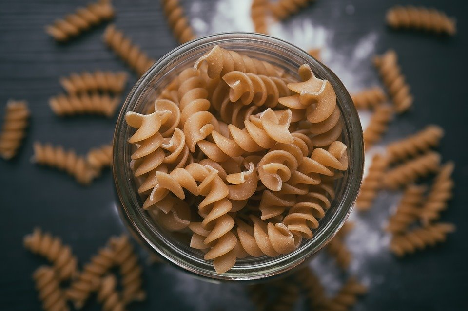
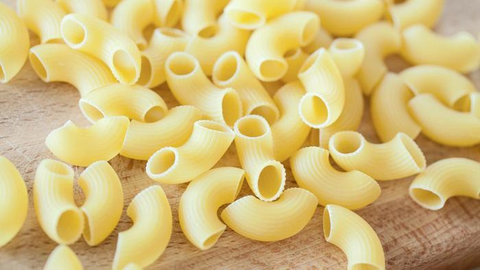

파스타의 역사
파스타의 역사에 대해 알아보자
파스타는 먼 옛날 기원전 1세기경부터 라자냐를 먹은 기록이 있고 그 이전인 기원전 4세기에 살았던
이탈리아 에투르사칸족의 무덤에서 파스타를 만들었던 기구와 조각이 발굴되었다고 한다. 고대 로마
시대부터 파스타는 중요한 식문화로 자리잡았고, 파스타의 수요가 늘어나며 14세기 이후 상업화 되
기시작했으며, 17세기 이후 유럽 전역으로 퍼져나간 파스타는 19세기 이후 이탈리아 이민자들에게
의해 여러 나라에 알려지기 시작했다

파스타의 면 종류
(파스타 면 종류는 20가지가 넘어서 대표적인 면 몇가지만 소개하겠습니다)
스파게티

우리에게 가장 익숙하고 많이 사용되는 스파게티, 길고 가는 파스타로 토마토 소스를 이용해 많이 먹습니다. 스파게티 면은 굵기가 2mm 정도이고, 굵기에 따라 여러 종류가 있습니다.
라자냐

라자냐는 폭이 넓은 조각 파스타로 시금치를 가미해 초록빛으로 만들거나, 치즈를 이용해 오븐에 구워서 많이 조리합니다
펜네

끝을 사선으로 자른 튜브모양으로 표면이 매끈한 펜네 리셰(penne lisce) 홈이 있는 펜네 리가테(penne rigate)가 있습니다
푸실리

푸실리는 펜네와 함께 많이 익숙한 쇼트파스타입니다. 피자집 혹은 뷔페에서 토마토 소스에 버무러진 푸실리 파스타 많이 사용합니다
마카로니

마카로니는 기계로 만드는 파스타의 일종이며 스파게티라고 하기엔 그 형태가 상당히 짧고 속이 비어 있으며 계란이 들어가지 않습니다